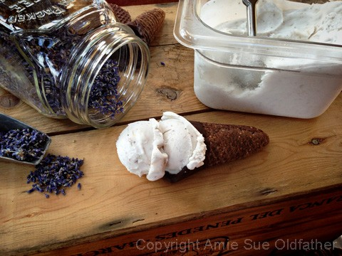
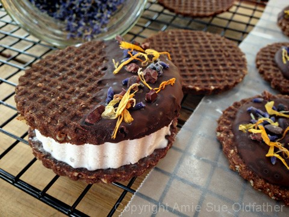

Lemon and English Lavender Ice Cream
Lemon and English Lavender Ice Cream

~ raw, gluten-free, dairy-free, nut-free ~
The flavor combination of lemon and lavender in this ice cream may sound a bit unusual, but they are incredibly delicate yet delicious when paired together. Lavender has a sweet, floral flavor, with citrus notes, so it seemed only natural to pair it with the zesty flavor of lemon.
If you are new to using lavender in the culinary sense, please read a post that I did here regarding its use. For years I would come across a recipe here and there that called for lavender but to be honest, I was quite intimidated, and it sent me running to the hills. But then you are looking at the same girl who once needed a tranquilizer after looking in her spice drawer!
I am being serious here. Salt and pepper were about the only spices that didn’t scare me. I got nervous around nutmeg, oblivious to oregano, petrified by parsley, so as you can see, something as decadent as lavender… well just sent me over the edge Funny how things can do that to a person. And why it seemed like such a complicated herb to use for seasoning, now eludes me.
If you can relate at all to what I just shared with you, then know this… there is hope for you! I am living proof, and I am here to help you… encourage you… support you, and let you know that I got your back. We can do this together.
To help you build up your confidence, go to your local health food store, specialty spice store, or a local nursery, and ASK for help. Here is a script that you can use, “Hi, I was wondering if you carry organic, fresh, or dried English lavender? I plan on using it in this most amazing raw ice cream recipe.” That is all that you have to say. Be aware; they might give you a quick once over and think to themselves… “Wow, she/he must be an amazing chef to be using lavender culinary!” ;)
If you can only find it fresh, not to worry, still get it. You can do one of two things… wrap a string around the stems of the bundle and hang it upside down to dry or you can use it fresh. I used some that I dried and you only need one-third of the number of dried buds compared to fresh lavender buds.
The real key to using lavender is to experiment; start out with a small amount and add more as you go. Adding too much to a recipe can be like eating perfume and make the dish bitter. So just remember, a little bit goes a long way.
I also want to let you know that I used canned coconut milk in my recipe. I realize that it is not raw, but I do the best that I can with what I have. Fresh is always better, but when I have to use a different form, I always seek out the best that I can find. I provided a link below to the brand that I use. It is BPA free, organic, and doesn’t have any additives.
Yields 5 cups
- 27 oz full-fat coconut milk or thick raw coconut cream
- 3/4 cup raw honey
- 1 Tbsp lemon zest
- 2 Tbsp fresh lemon juice
- 1/2 tsp lemon extract
- 1 Tbsp dried lavender buds
- 1/8 tsp Himalayan pink salt
Preparation:
- Coconut milk/cream – I supplied two options for the coconut milk. If you make raw coconut milk from Young Thai coconuts, use the least amount of water possible. And be sure to blend it until very creamy. If you use canned, use the full fat and chill it overnight prior to using.
- In the blender combine the coconut milk, honey, lemon zest, lemon juice, lemon extract, lavender buds, and salt. Blend until creamy.
- Place the carafe in the fridge or freezer to chill for an hour.
- Pour into ice cream maker and freeze according to ice cream maker’s manufacturer’s instructions.
Freezing Suggestions for Ice Cream:
-
Use an ice cream machine. Follow the manufactures directions.
-
Freeze in popsicle molds or 3 oz Dixie cups with a popsicle stick inserted.
-
-
Store the ice cream in the very back of the freezer, as far away from the door as possible. Every time you open your freezer door you let in warm air. Keeping ice cream way in the back and storing it beneath other frozen-sold items will help protect it from those steamy incursions.
-
Ice cream is full of fat, and even when frozen, fat has a way of soaking up flavors from the air around it—including those in your freezer. To keep your ice cream from taking on the odors, use a container with a tight-fitting lid. For extra security, place a layer of plastic wrap between your ice cream and the lid.
-
To soften in the refrigerator, transfer ice cream from the freezer to the refrigerator 20-30 minutes before using. Or let it stand at room temperature for 10-15 minutes.
-
Wish to make your own raw ice cream, wonder what machine I might recommend, and more? Click (
here) to check out the Reference Library!

Think outside the bowl… check out my recipe for waffle cones/bowls/cookies!

© AmieSue.com